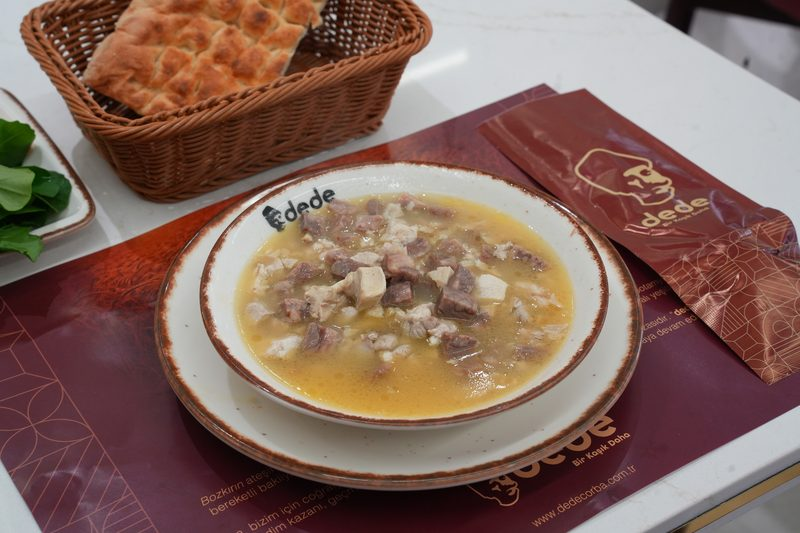
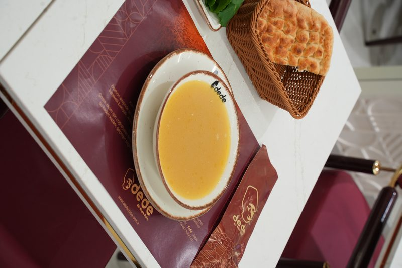
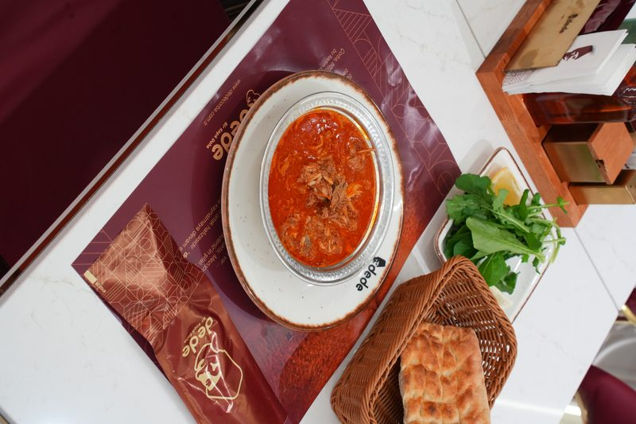
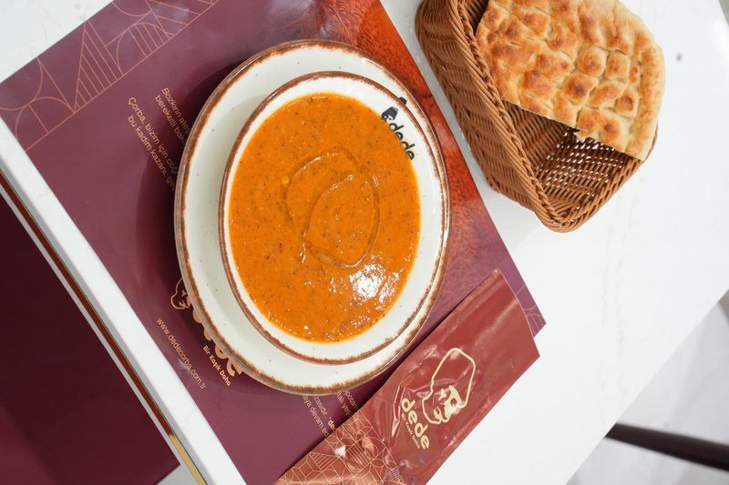
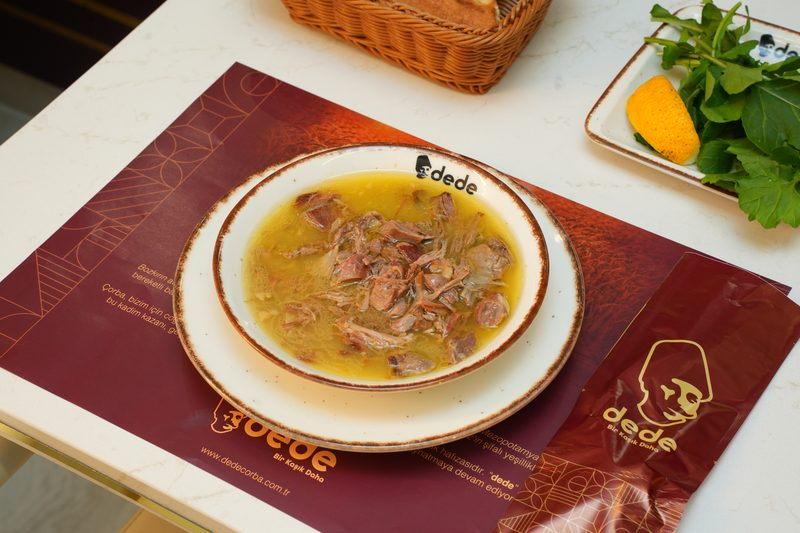

İşkembe Çorbası — Şifa Kaynağı Lezzet
Bağışıklık güçlendiren yapısıyla özellikle kış aylarının vazgeçilmezi. Günlük taze hazırlanan işkembe çorbası, doğal sarımsak ve sirke ile servis edilir.

Mercimek Çorbası — Klasik Ama Vazgeçilmez
Hem doyurucu hem de sağlıklı yapısıyla herkesin favorisi. Özel tarifle hazırlanan mercimek çorbası, tereyağı ve baharatlarla lezzetlendirilir.

Beyran Çorbası — Gaziantep'ten İzmir'e
Acılı ve doyurucu yapısıyla özellikle sabah saatlerinde tercih edilen beyran çorbası, et suyu ve pirinç ile sunulur.

Ezogelin Çorbası — Anadolu'nun Efsanesi
Baharatlı ve aromatik tadıyla sofraların yıldızı. Geleneksel tarifle hazırlanan ezogelin çorbası, sıcak ve taze servis edilir.

Kelle Paça Çorbası — Güç ve Enerji Deposu
Yoğun kolajen içeriğiyle vücut direncini artırır. Uzun saatler kaynatılarak hazırlanan kelle paça çorbası, gerçek lezzetiyle sunulur.

Ayak Paça — Şifa Deposu Geleneksel Tat
Özellikle hastalık dönemlerinde tercih edilen şifa deposu. Hijyenik ve özenli şekilde hazırlanır.
Lahmacun — Taş Fırından Efsane Lezzet
İnce hamuru ve bol malzemesiyle herkesin favorisi. Taş fırında hazırlanan lahmacun, çıtır ve lezzetlidir.
Tandır — Ağır Ateşte Eşsiz Lezzet
Uzun sürede pişirilerek yumuşacık hale gelen özel bir et yemeği. Damakta unutulmaz bir tat bırakır.
Tandır Pilav — Doyurucu ve Lezzetli
Et ve pilavın mükemmel birleşimi. Özel sunumla servis edilen tandır pilav, hem doyurucu hem lezzetlidir.